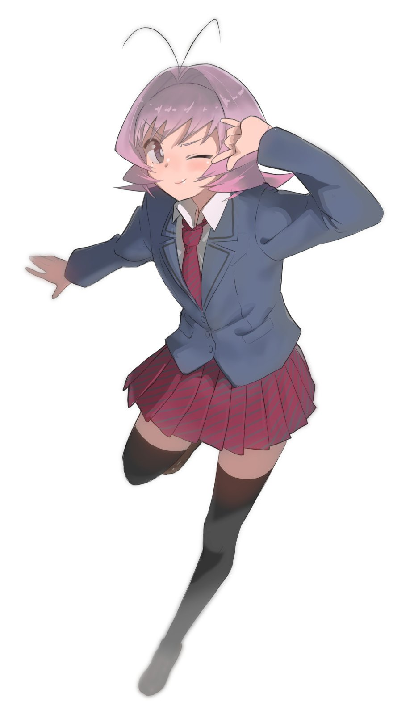

Наджиме Осане
| Аниме: | У Коми проблемы с общением (Komi-san wa, Komyushou desu.) |
| Роль: | Школьный друг всех учеников / Универсальный коммуникатор |
| Пол: | Неизвестен (Гендерно-флюидный / Меняется по желанию) |
| Рост: | 152 см |
| Вес: | 44 кг |
Описание
Абсолютный феномен общения и близкий друг детства практически каждого ученика в школе. Наджиме обладает невероятными навыками коммуникации и способна завести разговор и подружиться с кем угодно за считанные минуты. Носит школьную юбку, совмещенную с мужской рубашкой и галстуком.
Биологический пол Наджиме остается главной загадкой для окружающих: в средней школе этот персонаж позиционировал себя как парень, а после поступления в старшую школу стал называть себя девушкой. Обладает гиперактивным, харизматичным и слегка лукавым характером, всегда придумывает новые развлечения для компании.